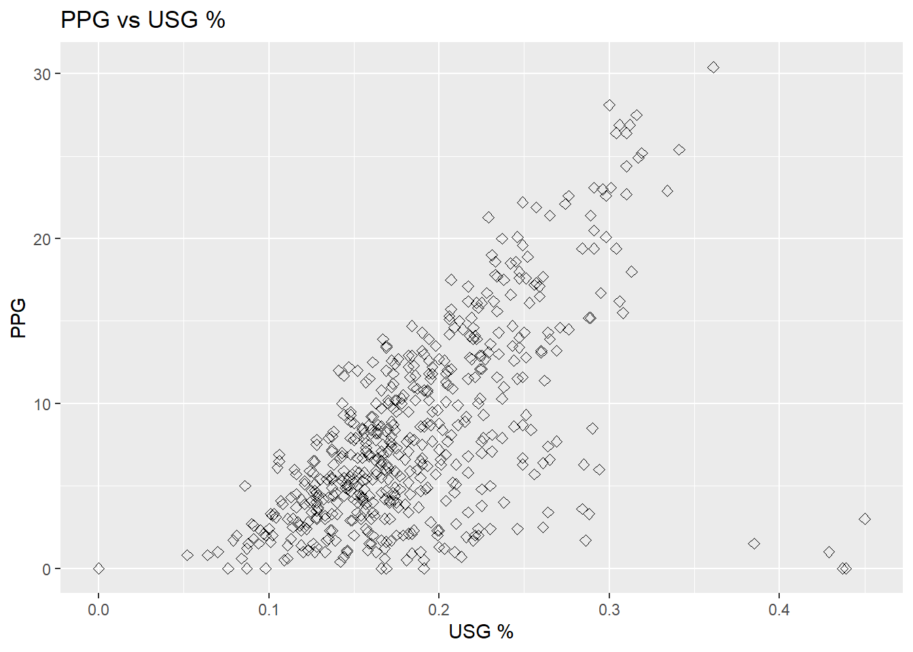

Chapter 2 An Optional Primer on Math and Statistics
I want these tutorials to appeal to people that are just starting out with data science to people with technical backgrounds that may not have a lot of experience with statistics, which is why I am separating any discussion that involves a lot of math into an optional appendix. Therefore, the majority of the tutorial will focus on key concepts and develop familiarity with \(\texttt{R}\). However, working with quantitative NBA data and statistics will involve some math.
This section gives a brief primer on the math and statistics that will come in useful throughout these tutorials. After skimming this section, if you feel that you already know everything detailed here, you can skip this section. You can also come back to this section while reading the tutorial if you need a refresher or more details. In fact, I am writing these tutorials so that it possible to understand the different algorithms and statistical techniques entirely through intuition. While I recommend understanding the key concepts mathematically, you can ignore all math in these tutorials if you want to.
This section only gives the background for the math and statistics needed to understand the key concepts of the tutorials, \(\textit{not}\) the appendix. I have added the appendix for people with a quantitative background in fields such as engineering, math, or data science. Many of the econometric methods and machine learning algorithms have room for “tweaking”, and a more involved discussion of the material may give you insights as to what changes you want to make. If you want to read the appendix, I’m assuming you already know about the concepts necessary to understand them or that you can learn them yourself if necessary.
2.1 Math Primer
Throughout this section, I will assume that you know algebra at a highschool level. A knowledge of basic calculus is helpful but it is not necessary as I will give the background about calculus that is necessary to go through the tutorials.
2.1.1 Summation Operator \(\sum\)
The one greek character that will come up often throughout these tutorials is the Greek capital letter for sigma, which is denoted as \(\sum\). Summing a lot of numbers comes up frequently throughout statistics, so \(\sum\) is used often as a shorthand that means, “sum these numbers”. It is usually represented as follows, \[ \sum_{i=1}^{n} x_{i}\]. Lets understand this more carefully. The \(x_{i}\)’s are a list of ordered numbers that you already know of. The \(n\) indicates that there are \(n\) different numbers that you are trying to sum over. For example, if \(x_{1} = 2, x_{2} = 6, x_{3} = -7\) and \(x_{4} = 22\), then the short-hand notation is \[ \sum_{i=1}^{4} x_{i} = x_{1}+ x_{2} + x_{3} + x_{4} = 2 + 6 - 7 + 22 = 23.\] We can also specify some transformation to the numbers \(x_{i}\). For example, if we want the sum of twice the square of those previous four numbers, we write \[ \sum_{i=1}^{4} 2x_{i}^{2} = 16 + 144 - 196 + 1936 = 1900.\]
It is also common to specify a formula for the numbers \(x_{i}\). For example, we might say that \(x_{i} = 3i\), so if we wanted to sum the first 5 multiples of three, then we can write, \[ \sum_{i=1}^{5} 3i = 3 + 6 + 9 + 12 + 15 = 45\].
An especially useful way to use this notation is when there is complicated definition for what numbers you want to sum. Suppose that someone gives you the points that Kevin Garnett scored in each game of the 2003 and 2004 seasons, but you want to calculate the average points per game that KG scored throughout these seasons. Let’s create some notation. We want to calculate \(PPG_{py}\), where \(PPG\) stands for points per game,the \(p\) subscript stands for the name of the player of interest, and the \(y\) stands for the season year that player \(p\) played for. In total, we read the notation \(PPG_{py}\) as “points per game scored by player \(p\) in year \(y\). The data that we have been given is \(P_{pyg}\), where \(P\) stands for points scored, \(p\) and \(y\) have the same definitions made previously, and \(g\) stands for the specific game played in the year. We read this as”points scored by player \(p\) in year \(y\) in game \(g\). Noting that KG played 82 games for both the 2003 and 2004 seasons, we can calculate \[ PPG_{KG,2003} = \frac{1}{82}\sum_{g = 1}^{g = 82} P_{KG,2003,g} = 24.2\] and \[ PPG_{KG,2004} = \frac{1}{82}\sum_{g = 1}^{g = 82} P_{KG,2003,g} = 22.5\]. As a checkpoint, make sure you understand these two expressions and why they make sense.
2.1.2 Calculus
A common theme across econometrics and machine learning is the maximization or minimization of some numerical objective function or criteria. The goal of maximizing or minimizing an objective function is called an optimization problem. Specific examples about what this means will come later. For now, let’s develop some calculus tools to help us understand how to solve optimization problems. This discussion about calculus will be very general. If you want to understand these concepts in more depth, I recommend finding freely available videos online or through commonly used calculus textbooks such as Stewart’s Calculus.
2.1.2.1 Single Variable
The main tool used for solving optimization problems is differentiation. Differentiation of a function \(f(x)\) finds another function denoted as \(f'(x)\) that outputs the slope of the tangent line at each value of \(x\). The function \(f'(x)\) is called the derivative of \(f(x)\). It also commonly denoted as \(\frac{df}{dt}\). The tangent line to a function \(f(x)\) at some point \(x=x_{0}\) is the line that touches a curve at that point, matching the curve’s slope there. Therefore, the \(f(x_{0})\) is the rate that \(f(x)\) will change by if \(x_{0}\) is changed by a very small amount. Take a look at the the figure below.
Figure 1: Tangent Lines
Our original function \(f(x)\) is the red curve. The black line and the green line are tangent lines to \(f(x)\) at \(x = -1.60\) and \(x = 1.4\). The slope of the black line is negative which means \(f'(-1.60) < 0\) and the slope of the green line is positive which means \(f'(1.4) > 0\).
Note: The derivative \(f'(x)\) gives the value of the slope at the point \(x\), not the tangent line.
Also, we can differentiate a function several times. The second derivative of \(f(x)\) is denoted as \(f''(x)\) or \(\frac{d^{2}f}{dx^{2}}\). The interpretation of the second derivative is the slope of the derivative function, or how quickly the function \(f(x)\) is increasing or decreasing. Think of this as \(f(x)\) being distance travelled, \(f'(x)\) being velocity, and \(f''(x)\) being accerleration.
I have left off many details related to differentiation for the purpose of keeping this section brief. To actually calculate derivatives of several different types of functions, I recommend looking at the notes on https://tutorial.math.lamar.edu/pdf/calculus_cheat_sheet_derivatives.pdf which was created by Paul’s Online Notes.
2.1.2.2 Optimization with Calculus
Now that have learned about differentiation, we can talk about solving optimization problems. Collectively, maxima and minima are called extrema. There are two different kinds of maximum and minimum values to a function. If a function \(f(x)\) obtains a maximum value at \(x = x^{*}\) such that \(f(x^{*})\) is larger than all other values of \(f(x)\), then \(x = x^{*}\) is a global maximizer and \(f(x^{*})\) is a global maximum.
On the other hand, if \(f(x^{*})\) obtains a maximum on some interval \(a \leq x \leq b\) but there may exist another value \(x^{**}\) such that \(f(x^{**}) \geq f(x^{*})\) then \(x^{*}\) is a local maximizer and \(f(x^{*})\) is a local maximum. The definitions of the global minimizer, global minimum, local minimizer, and local minimum are similar.
To find the maximum or minimum value of a function \(f(x)\), we solve the equation \(f'(x) = 0\). This means that the slope of a function at its minimum or maximum value is 0, or that the tangent line is horizontal. If \(f'(x^{*}) = 0\) and \(f''(x^{*}) > 0\), then \(x^{*}\) is a local or global minimizer. If \(f''(x^{*}) < 0\), then \(x^{*}\) is a local or global maximizer. If \(f''(x^{*}) = 0\), then \(x^{*}\) could be a minimizer, maximizer, or neither. If \(f'(x) = 0\) has no solutions, then \(f\) has no local extrema. In this case, \(f\) could be strictly increasing or strictly decreasing.
Take a look at the figure below. The two points with the tangents lines are shown. Try to figure out whether each of those two points are local/global minima, local/global maxima, or neither. No computation should be needed. You can conceptually reason through this question.
Figure 2: Local Min/Max
Example
Consider the function \[f(x) = x^{3} - 2x\]. Then \(f'(x) = 3x^{2} - 2\). Solving \(f'(x) = 0\) implies \(x_{1} = \sqrt{\frac{2}{3}}\) and \(x_{2} = -\sqrt{\frac{2}{3}}\) are both solutions and are extrema for this function. Note that \(f''(x) = 6x\). Then \(f''(x_{1}) = 6\sqrt{\frac{2}{3}}\) and \(f''(x_{2}) = -6\sqrt{\frac{2}{3}}\). Therefore \(x_{1}\) is a local minimizer and \(x_{2}\) is a local maximizer.
2.2 Statistics Primer
This section gives a brief primer about theoretical statistics. The section assumes that you know about the basics of probability at the high school level. If you need a refresher, I recommend looking at \(\texttt{https://www.khanacademy.org/math/probability/probability-geometry}\).
2.2.1 Random Variables
A random variable \(X\) is a variable that can take on several different values with some probability. The probabilities come from some underlying function called a probability mass function (PMF). The PMF is usually written \(p(X = x)\). The notation is a bit confusing and requires a bit of explanation. We read this PMF as “the probability that \(X\) is equal to \(x\)”. The uppercase \(X\) is the random variable whereas the lowercase \(x\) is a realization of the random variable. The random variable \(X\) can take on many values and \(x\) is one of the values that \(X\) could take.
An example of a random variable \(X\) is a coin flip. The value that \(X\) can take are either \(x = 1\) if the result is heads or \(x= 0\) if the result is tails.The collection of values that \(X\) could take is denoted as \(\Omega\). For our coin flip example, \(\Omega = \{0,1\}\). One useful piece of notation is the \(\in\) symbol. The \(\in\) symbol is used to indicate whether or not \(x\) is a possible value that \(X\) could take on. Writing \(x \in \Omega\) is a statement which is either true or false. This means that \(1 \in \Omega\) is true and \(0 \in \Omega\) is true. The statement \(6 \in \Omega\) is false. This means that \(p(X = 6) = 0\). Note that since \(\Omega\) is the collection of all possible values that \(X\) could take, \[\sum_{x \in \Omega} p(X = x) = 1\]. This statement means that the sum of the probabilities of all possible values that \(X\) could take is 1.
Example
One example of a random variable is the result of a dice roll. Assume that we have a standard fair dice with six faces. Then we define the random variable \[D = \text{value on the front face of a dice after a roll}\]. Then the collection of possible values that \(D\) could take is \[\Omega = \{1,2,3,4,5,6\}\]. Since we stated the dice is fair, meaning that all faces are equally likely, the PMF is given by \[p(D = d) = \frac{1}{6}\] for \(d = 1,2,3,4,5,\) and \(6\).
2.2.2 Expected Value and Variance
Consider an experiment where you flip and record the result of a coin flip repeatedly multiple times, where heads is equal to a 1 and tails is equal to a zero. If you average the results after a ridiculously long time of flipping the coin, you should expect the value to be \(\frac{1}{2}\) since both 1 and 0 are equally likely. This value is called the expected value of a random variable and is denoted and defined as \[\mathbb{E}[X] = \sum_{x \in \Omega} xp(X = x)\].
An important property about the expected value operator is that the expected value of the sum of the linear combination of two or more random variables is given by \[\mathbb{E}[aX+bY] = a\mathbb{E}[X] + b\mathbb{E}[Y]\] where \(a,b\) are constants, not random variables.
Example
Consider the dice roll example from earlier. We can calculate the expected value as \[\mathbb{E}[D] = \sum_{x \in \Omega} xp(X = x) = \frac{1}{6}(1 + 2 + 3 + 4 + 5 + 6) = \frac{21}{6}\] Example: Hack-a-Shaq
In the 2001 NBA season, Shaquille O’Neil averaged \(0.580\) for 2-point field goal percentage, \(0\) for 3-point field goal percentage, and \(0.555\) from the free throw line. Imagine that the Lakers are playing in the playoffs, these statistics are accurate probabilities of Shaq’s scoring, the two free throws are independent events, and the opposing team is in the bonus. Should opposing teams foul Shaq before he makes a field goal attempt?
We are now working with two random variables. The random variable defined by \(FG\), which is equal to 0 if Shaq misses, 2 if Shaq makes a 2 pointer, and 3 if Shaq makes a 3 pointer. The expected value of a field goal is \[\mathbb{E}[FG] = 0.420(0) + 0.580(2) + 0(3) = 1.16\]. On the other hand, if Shaq is fouled, then we are dealing with a random variable \(FT\). The expected value is \[\mathbb{E}[FT] = 0(.445) + 1(.555)(.445) + 2(.555)^{2} = 0.8630\]. If the opposing team fouled before a shot was attempted while in the bonus, Shaq would be expected to score \(0.297\) less points on average.
The variance is defined from the expected value. It shows the squared deviation of possible events from the sample mean. The variance of a random variable \(X\) is defined as \[ \sigma_{X}^{2} = Var(X) = \mathbb{E}[(X-\mathbb{E}[X])^{2}] = \mathbb{E}[X^{2}] - (\mathbb{E}[X])^{2}. \] The standard deviation is defined as the square root of the variance and is denoted by \(\sigma_{X}\).
The covariance between two random variables is a measure of the joint variability of two random variables. The identity for covariance is \[Cov(X,Y) = \mathbb{E}[XY] - \mathbb{E}[X]\mathbb{E}[Y]\]. A more interpretable version is the correlation, which is defined by \[Corr(X,Y) = \frac{Cov(X,Y)}{\sigma_{X}\sigma_{Y}}\]. This is standardized to be between -1 and 1. A value close to 1 indicates very strong positive comovement between two random variables, wheras a value close to 1 shows a very strong negative comovement between the two variables. If the correlation is near 0, the comovement is very weak. Example
Consider the NBA advanced stat usage percentage (\(USG%\)), which is an estimate of the percentage of team plays used by a player while he was on the floor. We might expect that this is correlated with the points per game scored by a player. As a teaser, lets try to analyze this for the 2018 NBA season with \(\texttt{R}\).
library(nbastatR)
library(ggplot2)
data <- bref_players_stats(seasons = 2018, tables = c("advanced", "per_game"))## parsed http://www.basketball-reference.com/leagues/NBA_2018_advanced.html
## parsed http://www.basketball-reference.com/leagues/NBA_2018_per_game.html
## Advanced
## PerGamescatter <- ggplot(data, aes(x=pctUSG, y=ptsPerGame)) +
geom_point(size=2, shape=23)
scatter + labs(x = "USG %", y = "PPG", title = "PPG vs USG %")
## [1] "Chris Boucher" "PJ Dozier" "Mindaugas Kuzminskas"
## [4] "Naz Mitrou-Long"## [1] 0.6137692The code is provided above. We will go into depth about how to create more of these plots in future tutorials. The scatterplot shows a somewhat strong correlation between points scored per game and the \(USG %\). This makes sense as players that are involved in more plays might also score at higher values. Some potential outliers seem to be those four points that have a \(USG %\) greater than \(0.4\), but still score very low points per game. We identify these players as Chris Boucher, PJ Dozier, Mindaugas Kuzminskas, and Naz Mitrou-Long.
2.2.3 Statistical Estimators
We end the section off with a discussion about estimators, the crux of statistical modeling. To motivative the discussion about estimation, lets discuss the points scored by a particular player. Suppose that Michael Jordan plays 82 games in a season.Michael Jordan scores a lot of points, but on any given day, he might score a lot more points than typical, and he may also score way less points then usual due to either injuries, bad mood, or just simply a poor shooting night. Therefore, it is fair to say that the points that MJ scores in a particular game is random and follows some PMF. Since MJ, is retired, we can look at data for all of his games, and create a PMF for the amount of points he scores in a game. We can then calculate the expected value to find the true number of the points per game scored by MJ, which is \(30.1\) points per game.
Unfortunately, for current players, there is no way to do this with a hundred percent accuracy. There’s no way to know with certainly how many points per game a player will score next season. However we can do something. Suppose that the points that a player scores in all 82 games in a particular season are random variables but that we have realizations \(PPG_{1}, PPG__{2}, ..., PPG_{82}\). Suppose that the true value is \(PPG\), true value meaning the actual expected value of points per game that is unknown to us. Then \(\mathbb{E}[PPG_{i}] = PPG\). Now observe that \[\frac{1}{82} \mathbb{E}[\sum_{i=1}^{82} PPG_{i}] = \frac{1}{82} \sum_{i=1}^{82} \mathbb{E}[PPG_{i}] = \frac{82PPG}{82} = PPG\]. If we average the PPG for all 82 games that a player scores, we have obtained the actual expected value! More formally, the average is called the sample mean. Since the expected value of the sample mean is equal to the expected value of the points scored for a player, we say that the sample mean is an unbiased estimator for the actual expected value or the actual mean. In general, the sample mean is denoted by \(\bar{x}\) and is calculated by \[\bar{x} = \frac{1}{n} \sum_{i=1}^{n} x_{i}.\]
Similarly, the unbiased estimator for the variance is called the sample variance, which is denoted and calculated by, \[ \bar{s} = \frac{1}{n-1}\sum_{i=1}^{n}(x_{i}-\bar{x})^{2}.\] There is an \(n-1\) in the denominator instead of a \(n\) because the \(-1\) is need to ensure that \(\bar{s}\) is an unbiased estimator for \(Var(X)\). I won’t prove this assertion here, but you can attempt it yourself to practice some of the computation.
We now define what bias actually means. In general, let any arbitrary estimator for the random variable \(X\) be \(\hat{X}\). For example, if the random variable is points scored in a game, we can choose \(\hat{PPG} = 5\), which is a very bad estimator for most players, but may not be a bad estimator for NBA champion Kendrick Perkins, who averaged \(5.4\) points in his career. The bias for an estimator is defined as \[Bias[\hat{X}] = \mathbb{E}[\hat{X}-X].\] Preferably, we want a bias equal to zero. But this may not be possible.
2.3 Concluding Remarks
In this section, I provided a very brief primer/reference for the statistics and math that will be used in the key sections portions of the tutorials. We will take a short break from all of this math. In the next sections, we learn about the differences between econometrics and machine learning, and why both will be useful for NBA analytics. We then begin to learn how to use \(\texttt{R}\).